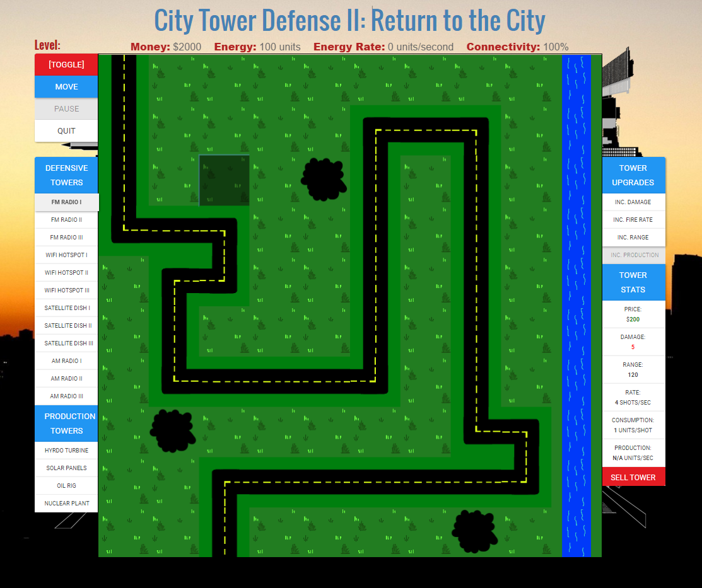
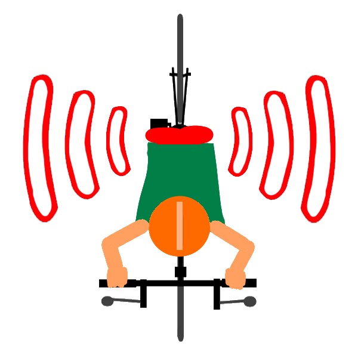
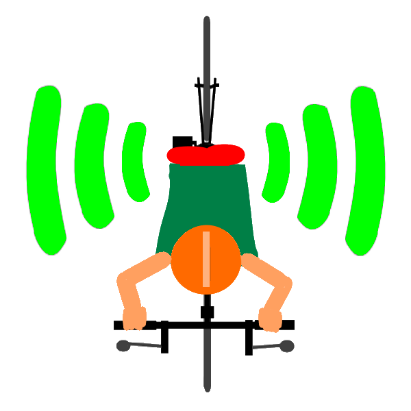
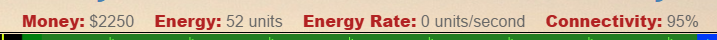

Place Towers by clicking on a space, and selecting the tower you wish to place. The stats of a tower are
on the right hand side of the screen.

There are two types of Towers, Defense and Production.
Defense Towers use Energy to connect their
signal to the incoming vehicles.
Production Towers create Energy at a set constant rate.
If the required Energy input of a tower exceeds the total energy stored, it will not be able to operate.
A disconnected Vehicle can be identified by the empty red signal bars.

Once a vehicle is connected, the bars will become solid green.

Once a vehicle reached the end of the road, it will either reward the player with money if the vehicle is connected,
or reduce the city's Connectivity if the vehicle is disconnected.

The levels progressively get harder as they increase, up until level 25, when the game is over. After level 25, the player can keep playing until losing, but vehicles will spawn in random orders and amounts.
BACK TO MENU